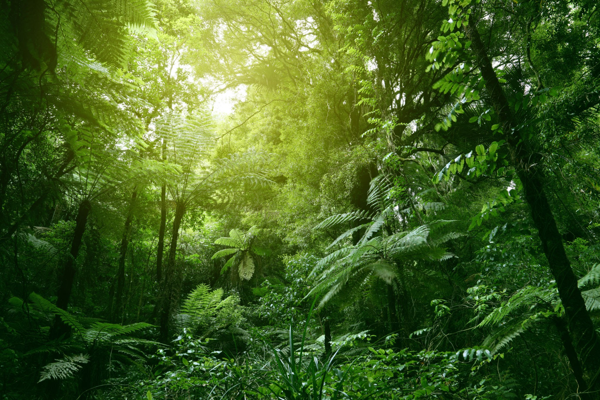
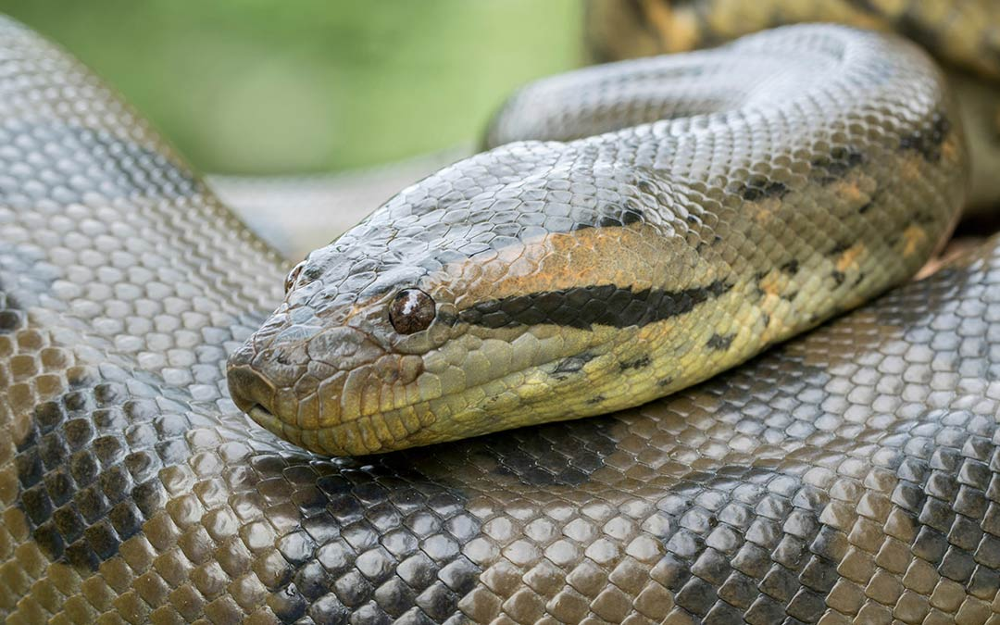
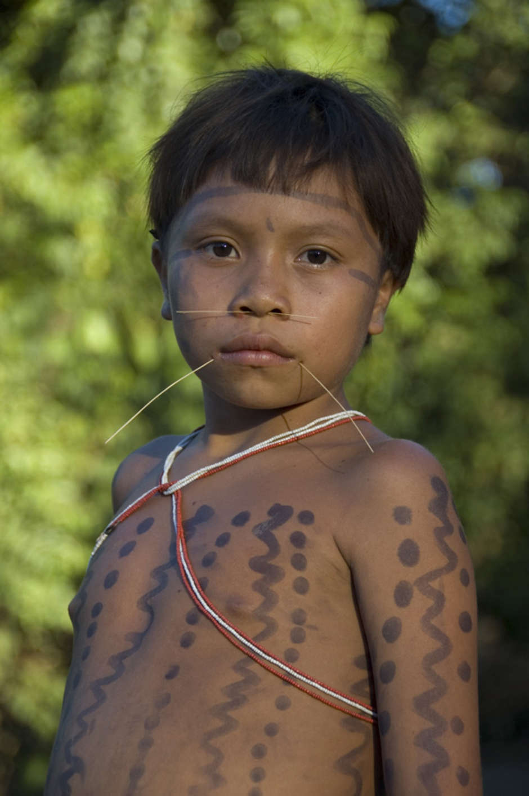

Historias de la selva
Un blog dedicado a compartir historias sobre la vida en la selva.
Últimas historias
El jaguar y la tortuga
Un jaguar hambriento se encuentra con una tortuga astuta. ¿Quién ganará la batalla de ingenio?
Leer más
La aventura de la anaconda
Leer más
Las tradiciones de la tribu Yanomami
Leer más